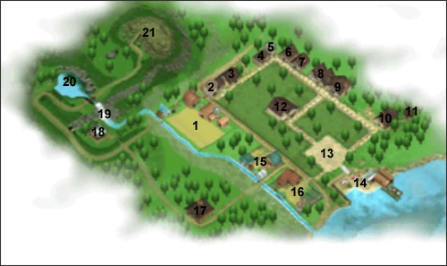

OUTROS Pular para a seção: Arruaça, confessionário, Stamina e fadiga, Porcentagem da Fazenda, Zerando/ganhando o jogo Esta seção é para outras coisas que você deveria saber sonre o videogame Harvest Moon: Back to Nature que não se encaixe em nenhuma das outras seções. MAPA Este é o mapa de todos os pontos de interesse neste jogo. O vilarejo e a área ao redor não é muito grande enão você não deveria ter problemas em achar seu caminho de volta.  1: Sua Fazenda(Your Farm) 2: Loja de Saibara(Saibara’s Shop) 3: Vinícola Aja(Aja Winery) 4: Casa de Basil, Anna e Mary(Basil, Anna and Mary’s House) 5: A Biblioteca(The Library) 6: Casa de Ellen(Ellen’s House) 7: Casa do prefeito Thomas(The Mayor’s House) 8: O supermercado(The Supermarket) 9: O hospital(The Hospital) 10: A igreja(The Church) 11: A casa dos duendes da colheita(The Harvest Sprites’ House) 12: A hospedaria(The Inn) 13: A praça da cidade(The Town Square) 14: A praia(The Beach) 15: A fazenda poultry(The Poultry Farm) 16: Rancho Yodel(Yodel Ranch) 17: Casa do Gotz(Gotz’s House) 18: A fonte termal(The Hot Springs) 19: A mina da cachoeira(The Waterfall Mine) 20: A mina de inverno(The Winter Mine) 21: O pico da colina mãe(The Peak of Mother Hill) ARRUAÇA(LITTERING) Em Harvest Moon: Back to Nature você pode jogar itens no chão da sua fazenda, na montanha, próximo a fonte termal ou perto da casa de Gotz. Se você jogar um item no chão dentro da cidade ou dentro da casa de um aldeão é contado como "arruaça". Toda vez que você faz arruaça seu afeto com cada aldeão desce por 1 e sua arruaça sobe para 1. Quanto maior sua arruaça total neste jogo mais lixo você encontrará quando pescar. Aparentemente também aumenta as chances de um tufão durante o verão ou uma nevasca no invermo. Você pode embora reduzir sua total contagem de arruaça indo para a igreja se confessar. CONFESSIONÁRIO Se você for para a igreja entre 1:00pm e 3:00pm você pode "confessar seus pecados". Você só pode confessar uma vez por dia neste jogo e você pode não ser perdoado. Suas chances de ser perdoado aumenta a afeto do pastor Carter com você Se você se confessar que fez bagunça(arruaça) e você é perdoado ele vai resetar sua contagem total de arruaça para 0. Você também pode confessar que aldeãos não gostam de você e se é perdoado todos os aldeãos gostarão um pouco mais de você. Se você não perdoar todos os aldeãos gostarão menos de você. Estas são as unicas coisas provaveis que realmente são uteis para se confessar. STAMINA E FADIGA Em Harvest Moon: Back to Nature seu personagem começa o jogo com um total de 100 de stamina e cada Power Berry que ele come adciona +10 de stamina ao total. Quando você usa uma das suas cinco ferramentas básicas e/ou a vara de pescar/vara boa você perderá 1 stamina. Para cada nível de carregamento de sua ferramenta você perderá mais 1 stamina. Se você completamente carregar uma ferramenta de mystrile por exemplo você perderá 5 de stamina. Depois de acabar sua stamina, toda vez que você usa uma ferramenta você começará a ganhar fadiga. Quanto mais tarde da noite for mais fadiga você ganhará. Se realmente e tarde da noite você ainda ganhará fadiga mesmo se você tem stamina sobrando. Se estiver chuvendo ou nevando você também ganhará fadiga mesmo se você tem stamina. 50% Stamina 30% Stamina 10% Stamina 0% Stamina 50% Fatiga 80% Fatiga 100% Fatiga Foi parar no hospital Quanto mais fadiga você tem mais doente seu personagem se tornará. Quando você atinge 100 de fadiga sua visão escurecerá, seu personagem desmaiará e acordará no hospital. Você perderá o resto do dia enquanto você se recupera e o doutor também cobrará 10G. Quanto mais fadiga você tem quando você dorme, você acordará mais tarde na manhã seguinte. Com 0 de fadiga você começa o dia as 6:00am. Com 50 de fadiga você começa o dia as 8:00am. Com 80 de fadiga você acordará as 12:00pm. Com 100 de fadiga vocÊ desmaiará e acordará no hospital. você perdera o dia inteiro e vai acordar as 12:00pm no dia seguinte com 75 de fadiga. A seguinte tabela mostra como seu personagem neste jogo ganha fadiga por cada ferramenta que usa(Independentemente de quanto você carrega-la): Clima normal Chuvendo ou nevando - Antes 10:00pm 10:00pm a 12:00am 12:00am a 6:00am Antes 10:00pm 10:00pm a 12:00am 12:00am a 6:00am >0 stamina +0 +1 +2 +1 +2 +3 0 stamina +2 +3 +4 +3 +4 +5 Quando você come a Baga Mística(Mystic Berry) você ganha fadiga diferente em uma taxa mais devagar. Clima normal Chuvendo ou nevando - Antes das 10:00pm 10:00pm a 12:00am 12:00am a 6:00am Antes das 10:00pm 10:00pm a 12:00am 12:00am a 6:00am >0 stamina +0 +0 +1 +0 +1 +1 0 stamina +1 +1 +2 +1 +2 +2 Quando você come a Baga Mística(Mystic Berry) você ganha fadiga diferente em uma taxa mais devagar. As 12:00am, 2:00am e 4:00am você pode automaticamennte ganhar 3 de fadiga ao menos que seu personagem esteja deitado no chão dormindo ou dentro de uma fonte termal(Hot springs). Se você não tem ido dormir pelas 6:00am você automaticamente recebe +20 de fadiga. Se você for dormir as 6:00pm neste jogo você acordará na manhã seguinte com 127 de stamina restaurada com 30 fadiga removida. Para cada hora depois das 6:00pm que você fica acordado você terá 7 menos stamina restaurada e 3 menos fadiga removida. Tomar café da manhã toda manhã remove 1 de fadiga. Você pode restaurar stamina tomando o remédio Bodigizer e você pode remover fadiga com Turbojolt. Comendo comida também pode restaurar stamina e remover fadiga por pequenas quantidades. A fonte termal(Hot Springs) restaura 2 stamina e remove 1 de fadiga por cada minuto do jogo. Você pode sem dúvida tirar vantagem da fonte termal(Hot Springs) pulando nela por uma hora e toda vez que sua fadiga alcançar 50 pontos. Você também pode ficar acordado quase toda noite e entrar na fonte termal(Hot springs) por unas 4:00am antes de correr para casa e ir dormir. Isto essencialmente é melhor para sua stamina e fadiga do que ir para cama as 6:00pm toda noite. A fonte termal é de longe o melhor jeito de restaurar stamina e remover fadiga em Power Berry. Eu não perderia meu tempo comendo comida ou tomando remédios PORCENTAGEM DA FAZENDA Sua porcentagem da fazenda na verdade não afeta se ou não você ganha ou perde o jogo. Nas versões dos jogos da América do Norte a maxima porcentagem que você pode chegar é 98%. Em outras versões do jogo Power Berry não contam com o total e você só popde chegar até 88%. Você tem 1% para cada Power Berry(10% total) 1% para cada coração do seu cachorro(10% total) 1% para cada coração do seu cavalo(10% total) 2% para cada expansão da casa que você tem feito(10% total) 1% para cada galinha que você tem(10% total) 1% para cada vaca e/ou ovelha que você tem(20% total) 1% para cada coração de sua esposa(10% total) 1% para cada coração do seu filho(10% total) 1% para cada 8 oito receitas que você cozinha(8% total) ZERANDO/GANHANDO O JOGO Depois de três anos sua performance será avaliada. Você também "ganhará o jogo" e sera capaz de continuar jogando por quantos anos que você quiser ou você perderá e sera forçado a deixar sua fazenda. É muito difícil perder o jogo então não se preocupe. Para ganhar em Harvest Moon: Back to Nature você tem que ter entregue ao menos 11 itens produzidos na sua fazenda, plantar ao menos 101 plantações individuais(Cada sacola de sementes possui 9), e ter ao menos 500 de afeto com uma garota. Olá! Bem-Vindo!